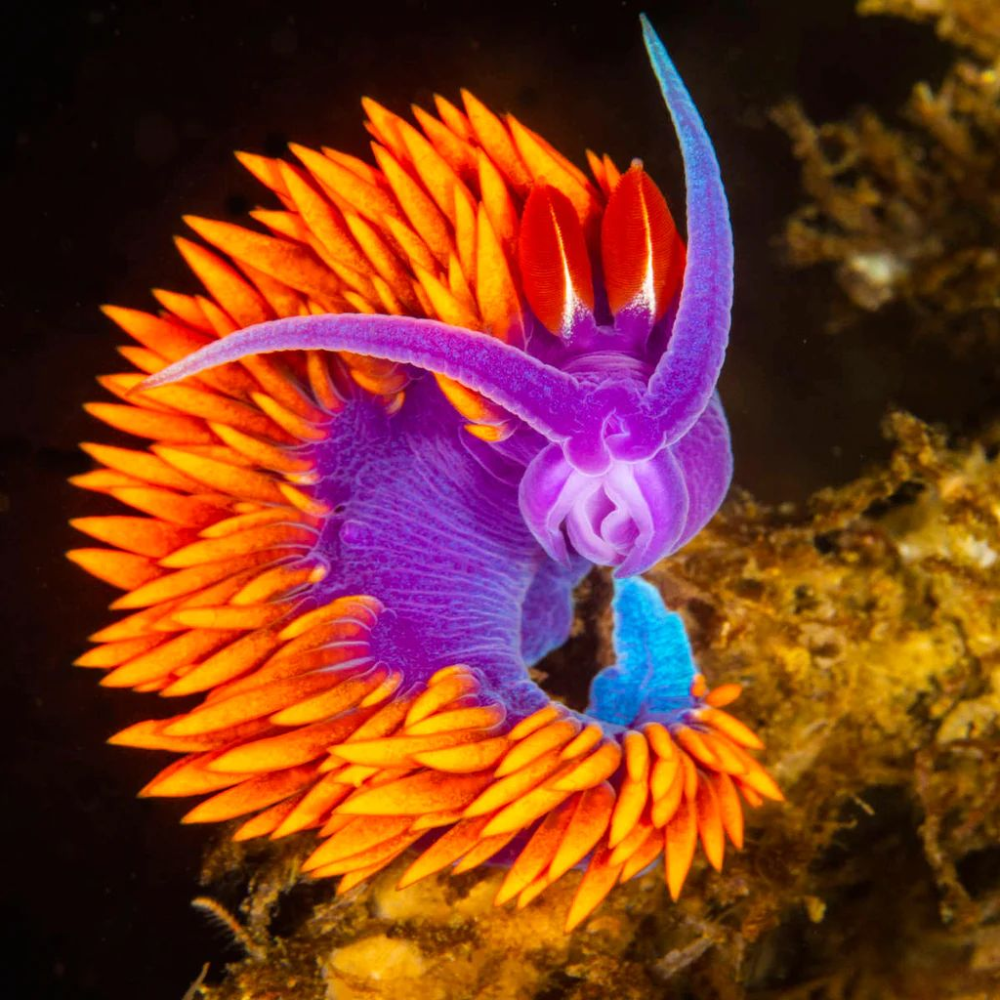
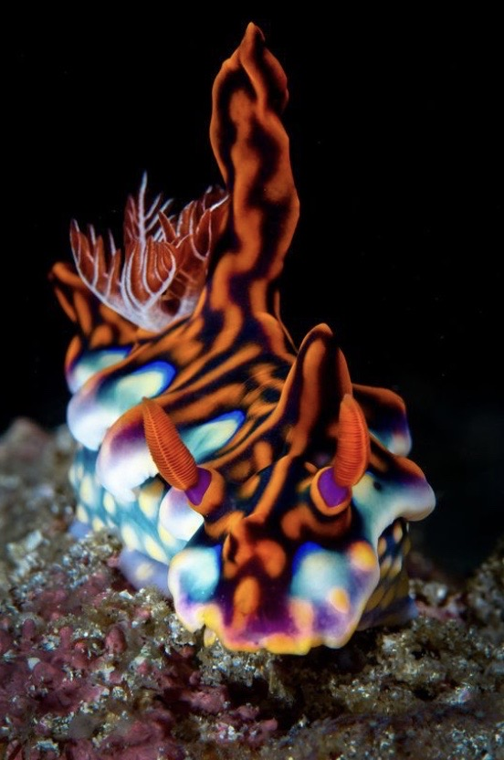
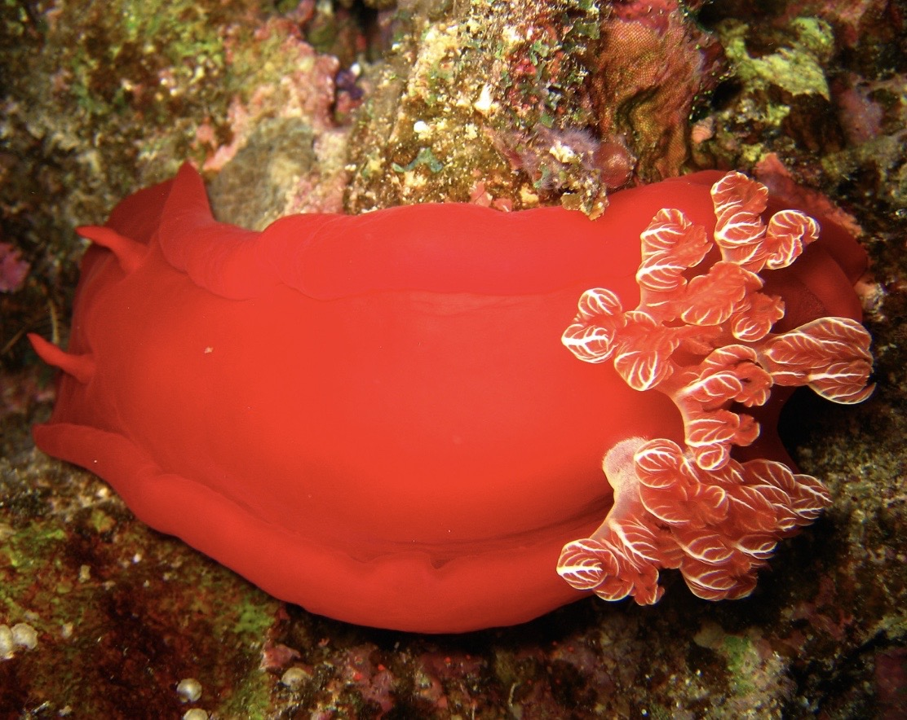

 spanish shawl Flabellinopsis iodinea, is a species of aeolid nudibranch, a very colorful sea slug.
 cyerce nigricans Cyerce nigricans is a species of sacoglossan sea slug, in the family Caliphyllidae.
 spanish dancer The Spanish dancer is one of the largest species and best swimmers of the nudibranchs.